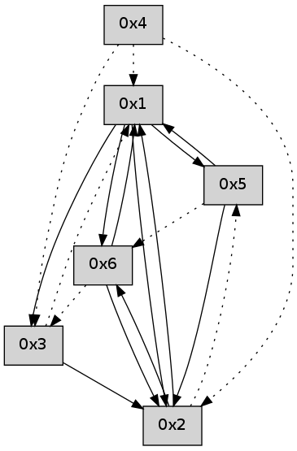

>> << IDX [start] -100 -25 -5 +0 +5 +25 +100 [455.349687099]
 Previous packets
----------------------------------------------------------------------
450.428607 beacon01(adaf) #0 coord=01,02,05,03,04,06 cycle=432.0ms assoc
-- color-indic=0 64 60 c9
450.438567 beacon02(adaf) #0 coord=01,02,05,03,04,06 cycle=432.0ms assoc 64 31 36
450.448568 beacon05(adaf) #0 coord=01,02,05,03,04,06 cycle=432.0ms assoc 64 97 1c
450.458568 beacon03(adaf) #0 coord=01,02,05,03,04,06 cycle=432.0ms assoc 64 0b 38
450.468568 beacon04(adaf) #0 coord=01,02,05,03,04,06 cycle=432.0ms assoc 64 ad 12
450.478568 beacon06(adaf) #0 coord=01,02,05,03,04,06 cycle=432.0ms assoc 64 d9 0e
450.490211 [Hello(5): seq=210 sym=2,1 sysInfo= stat=2:1,0,0,0/1:9,0,0,0]
----------------------------------------------------------------------
450.920717 beacon01(adaf) #0 coord=01,02,05,03,04,06 cycle=432.0ms assoc
-- color-indic=0 64 18 64
450.930677 beacon02(adaf) #0 coord=01,02,05,03,04,06 cycle=432.0ms assoc 64 49 9b
450.940679 beacon05(adaf) #0 coord=01,02,05,03,04,06 cycle=432.0ms assoc 64 ef b1
450.950678 beacon03(adaf) #0 coord=01,02,05,03,04,06 cycle=432.0ms assoc 64 73 95
450.960679 beacon04(adaf) #0 coord=01,02,05,03,04,06 cycle=432.0ms assoc 64 d5 bf
450.970680 beacon06(adaf) #0 coord=01,02,05,03,04,06 cycle=432.0ms assoc 64 a1 a3
450.987371 [Hello(1): seq=148 sym=5,2,6 sysInfo= stat=5:2,0,0,0/2:10,0,0,0/6:5,0,0,0]
----------------------------------------------------------------------
451.412825 beacon01(adaf) #0 coord=01,02,05,03,04,06 cycle=432.0ms assoc
-- color-indic=0 64 dc 0b
451.422785 beacon02(adaf) #0 coord=01,02,05,03,04,06 cycle=432.0ms assoc 64 8d f4
451.432785 beacon05(adaf) #0 coord=01,02,05,03,04,06 cycle=432.0ms assoc 64 2b de
451.442786 beacon03(adaf) #0 coord=01,02,05,03,04,06 cycle=432.0ms assoc 64 b7 fa
451.452786 beacon04(adaf) #0 coord=01,02,05,03,04,06 cycle=432.0ms assoc 64 11 d0
451.462787 beacon06(adaf) #0 coord=01,02,05,03,04,06 cycle=432.0ms assoc 64 65 cc
451.474441 [Hello(5): seq=211 sym=2,1 sysInfo= stat=2:2,0,0,0/1:10,0,0,0]
----------------------------------------------------------------------
451.904932 beacon01(adaf) #0 coord=01,02,05,03,04,06 cycle=432.0ms assoc
-- color-indic=0 64 90 bb
451.914892 beacon02(adaf) #0 coord=01,02,05,03,04,06 cycle=432.0ms assoc 64 c1 44
451.924893 beacon05(adaf) #0 coord=01,02,05,03,04,06 cycle=432.0ms assoc 64 67 6e
451.934893 beacon03(adaf) #0 coord=01,02,05,03,04,06 cycle=432.0ms assoc 64 fb 4a
451.944893 beacon04(adaf) #0 coord=01,02,05,03,04,06 cycle=432.0ms assoc 64 5d 60
451.954894 beacon06(adaf) #0 coord=01,02,05,03,04,06 cycle=432.0ms assoc 64 29 7c
451.965676 [Hello(1): seq=149 sym=5,2,6 sysInfo= stat=5:3,0,0,0/2:10,0,0,0/6:5,0,0,0]
451.970214 [Hello(4): seq=250 asym=2,1 sysInfo= stat=2:6,0,0,0/1:12,0,0,0]
----------------------------------------------------------------------
452.397039 beacon01(adaf) #0 coord=01,02,05,03,04,06 cycle=432.0ms assoc
-- color-indic=0 64 54 d4
452.407000 beacon02(adaf) #0 coord=01,02,05,03,04,06 cycle=432.0ms assoc 64 05 2b
452.417000 beacon05(adaf) #0 coord=01,02,05,03,04,06 cycle=432.0ms assoc 64 a3 01
452.427001 beacon03(adaf) #0 coord=01,02,05,03,04,06 cycle=432.0ms assoc 64 3f 25
452.437001 beacon04(adaf) #0 coord=01,02,05,03,04,06 cycle=432.0ms assoc 64 99 0f
452.447001 beacon06(adaf) #0 coord=01,02,05,03,04,06 cycle=432.0ms assoc 64 ed 13
452.458652 [Hello(5): seq=212 sym=2,1 sysInfo= stat=2:3,0,0,0/1:11,0,0,0]
----------------------------------------------------------------------
452.889148 beacon01(adaf) #0 coord=01,02,05,03,04,06 cycle=432.0ms assoc
-- color-indic=0 64 19 d3
452.899109 beacon02(adaf) #0 coord=01,02,05,03,04,06 cycle=432.0ms assoc 64 48 2c
452.909109 beacon05(adaf) #0 coord=01,02,05,03,04,06 cycle=432.0ms assoc 64 ee 06
452.919110 beacon03(adaf) #0 coord=01,02,05,03,04,06 cycle=432.0ms assoc 64 72 22
452.929110 beacon04(adaf) #0 coord=01,02,05,03,04,06 cycle=432.0ms assoc 64 d4 08
452.939111 beacon06(adaf) #0 coord=01,02,05,03,04,06 cycle=432.0ms assoc 64 a0 14
452.949891 [Hello(1): seq=150 sym=5,2,6 sysInfo= stat=5:4,0,0,0/2:11,0,0,0/6:5,0,0,0]
452.954414 [Hello(4): seq=251 asym=2,1 sysInfo= stat=2:6,0,0,0/1:12,0,0,0]
452.956202 [Hello(3): seq=251 sym=2 asym=1 sysInfo= stat=2:6,0,0,0/1:11,0,0,0]
----------------------------------------------------------------------
453.381255 beacon01(adaf) #0 coord=01,02,05,03,04,06 cycle=432.0ms assoc
-- color-indic=0 64 dd bc
453.391219 beacon02(adaf) #0 coord=01,02,05,03,04,06 cycle=432.0ms assoc 64 8c 43
453.401218 beacon05(adaf) #0 coord=01,02,05,03,04,06 cycle=432.0ms assoc 64 2a 69
453.411217 beacon03(adaf) #0 coord=01,02,05,03,04,06 cycle=432.0ms assoc 64 b6 4d
453.421218 beacon04(adaf) #0 coord=01,02,05,03,04,06 cycle=432.0ms assoc 64 10 67
453.431218 beacon06(adaf) #0 coord=01,02,05,03,04,06 cycle=432.0ms assoc 64 64 7b
453.442843 [Hello(5): seq=213 sym=2,1 sysInfo= stat=2:4,0,0,0/1:12,0,0,0]
----------------------------------------------------------------------
453.873363 beacon01(adaf) #0 coord=01,02,05,03,04,06 cycle=432.0ms assoc
-- color-indic=0 64 91 0c
453.883323 beacon02(adaf) #0 coord=01,02,05,03,04,06 cycle=432.0ms assoc 64 c0 f3
453.893324 beacon05(adaf) #0 coord=01,02,05,03,04,06 cycle=432.0ms assoc 64 66 d9
453.903324 beacon03(adaf) #0 coord=01,02,05,03,04,06 cycle=432.0ms assoc 64 fa fd
453.913325 beacon04(adaf) #0 coord=01,02,05,03,04,06 cycle=432.0ms assoc 64 5c d7
453.923325 beacon06(adaf) #0 coord=01,02,05,03,04,06 cycle=432.0ms assoc 64 28 cb
453.935019 [Hello(4): seq=252 asym=2,3,1 sysInfo= stat=2:6,0,0,0/3:0,0,0,0/1:12,0,0,0]
453.937092 [Hello(1): seq=151 sym=5,3,2,6 sysInfo= stat=5:5,0,0,0/3:0,0,0,0/2:11,0,0,0/6:5,0,0,0]
453.940412 [Hello(6): seq=167 sym=2,1 asym=3 sysInfo= stat=2:6,0,0,0/1:15,0,0,0/3:0,0,0,0]
----------------------------------------------------------------------
454.365471 beacon01(adaf) #0 coord=01,02,05,03,04,06 cycle=432.0ms assoc
-- color-indic=0 64 55 63
454.375433 beacon02(adaf) #0 coord=01,02,05,03,04,06 cycle=432.0ms assoc 64 04 9c
454.385432 beacon05(adaf) #0 coord=01,02,05,03,04,06 cycle=432.0ms assoc 64 a2 b6
454.395433 beacon03(adaf) #0 coord=01,02,05,03,04,06 cycle=432.0ms assoc 64 3e 92
454.405432 beacon04(adaf) #0 coord=01,02,05,03,04,06 cycle=432.0ms assoc 64 98 b8
454.415433 beacon06(adaf) #0 coord=01,02,05,03,04,06 cycle=432.0ms assoc 64 ec a4
454.427140 [Hello(5): seq=214 sym=2,1 asym=6 sysInfo= stat=2:5,0,0,0/1:13,0,0,0/6:0,0,0,0]
----------------------------------------------------------------------
454.857580 beacon01(adaf) #0 coord=01,02,05,03,04,06 cycle=432.0ms assoc
-- color-indic=0 64 0b 02
454.867540 beacon02(adaf) #0 coord=01,02,05,03,04,06 cycle=432.0ms assoc 64 5a fd
454.877542 beacon05(adaf) #0 coord=01,02,05,03,04,06 cycle=432.0ms assoc 64 fc d7
454.887541 beacon03(adaf) #0 coord=01,02,05,03,04,06 cycle=432.0ms assoc 64 60 f3
454.897543 beacon04(adaf) #0 coord=01,02,05,03,04,06 cycle=432.0ms assoc 64 c6 d9
454.907543 beacon06(adaf) #0 coord=01,02,05,03,04,06 cycle=432.0ms assoc 64 b2 c5
454.918327 [Hello(1): seq=152 sym=5,3,2,6 sysInfo= stat=5:6,0,0,0/3:0,0,0,0/2:11,0,0,0/6:6,0,0,0]